Chapter 10 R语言ggtree树状图
树状图的应用场景可以简单分为两种：一种是聚类分析结果展示的树状图，一种是生物里经常用到的进化树的展示，这两种情况都可以用ggtree俩来展示结果，ggtree是专门用来可视化树状图的ggplot2的扩展包，功能非常强大，细节调整都可以用ggplot2的语法来做。环形的树状图还专门有一个R包ggtreeExtra,可以在树状图周围添加额外的数据
ggtree作者写了非常详细的帮助文档 https://yulab-smu.top/treedata-book/
ggtree的安装需要借助BiocManager
BiocManager::install("ggtree")
这个需要R的版本在4.0以上
聚类分析比较常用的是
层次聚类
K均值聚类 （暂时不知道如何用ggtree展示这个结果）
以下介绍层析聚类
示例数据集用鸢尾花iris的数据集，原始数据集有150个样本，3个品种，这里把样本减少，每个品种选5个样本
library(tidyverse)
iris %>% group_by(Species) %>% sample_n(5) %>%
ungroup() %>%
mutate(sample.info=paste0("Sample",1:15)) %>%
write_csv(file = "example_data/10-treediagram/iris_subset.csv")层次聚类的函数是hclust(),
示例数据集截图
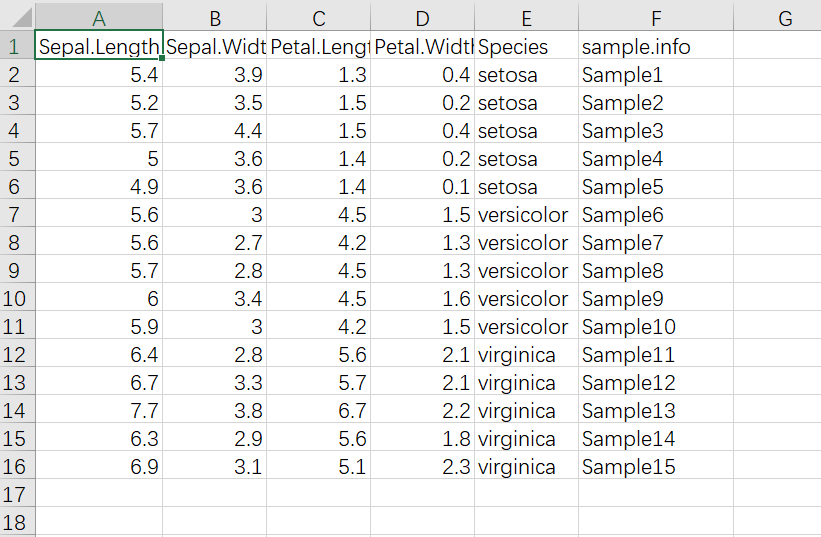
层次聚类的代码
library(tidyverse)
dat01<-read_csv("example_data/10-treediagram/iris_subset.csv")## Rows: 15 Columns: 6
## -- Column specification ---------------------------------------------------------------------
## Delimiter: ","
## chr (2): Species, sample.info
## dbl (4): Sepal.Length, Sepal.Width, Petal.Length, Petal.Width
##
## i Use `spec()` to retrieve the full column specification for this data.
## i Specify the column types or set `show_col_types = FALSE` to quiet this message.head(dat01)## # A tibble: 6 x 6
## Sepal.Length Sepal.Width Petal.Length Petal.Width Species sample.info
## <dbl> <dbl> <dbl> <dbl> <chr> <chr>
## 1 5.4 3.9 1.3 0.4 setosa Sample1
## 2 5.2 3.5 1.5 0.2 setosa Sample2
## 3 5.7 4.4 1.5 0.4 setosa Sample3
## 4 5 3.6 1.4 0.2 setosa Sample4
## 5 4.9 3.6 1.4 0.1 setosa Sample5
## 6 5.6 3 4.5 1.5 versicolor Sample6dat01 %>%
select(-Species) %>%
column_to_rownames("sample.info") -> dat02
dat02 %>% dist() %>% hclust() -> dat02.hclust
library(ggtree)
ggtree(dat02.hclust)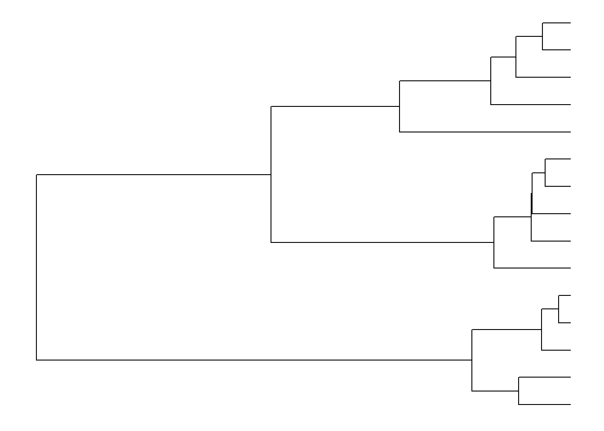
ggtree(dat02.hclust)+
geom_tiplab()ggtree(dat02.hclust)+
geom_tiplab()+
geom_tippoint()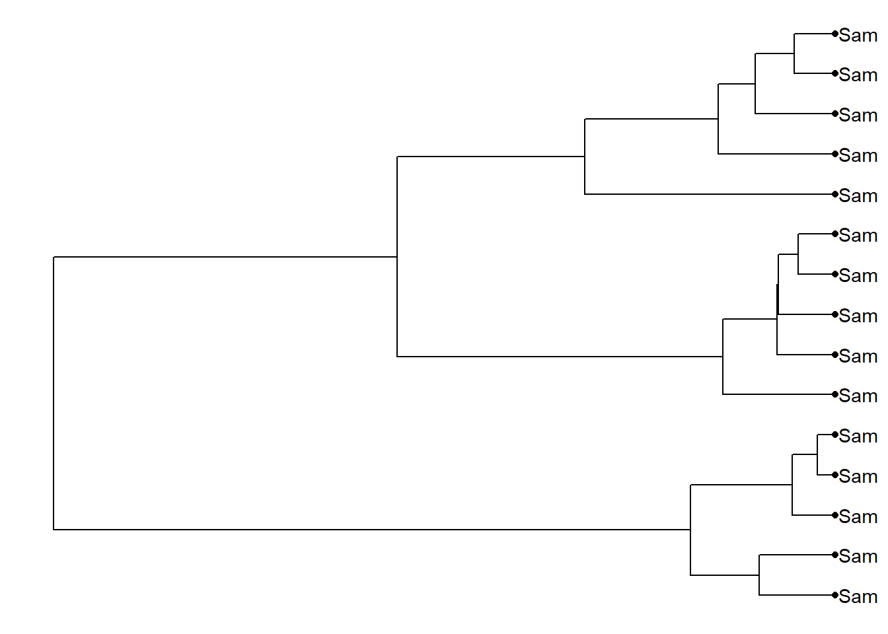
ggtree(dat02.hclust)+
geom_tiplab()+
theme_tree2()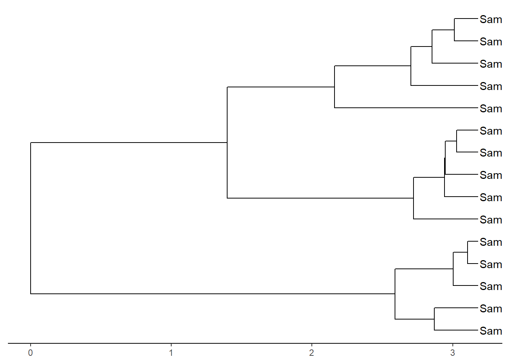
ggtree(dat02.hclust)+
geom_tiplab()+
xlim(NA,4)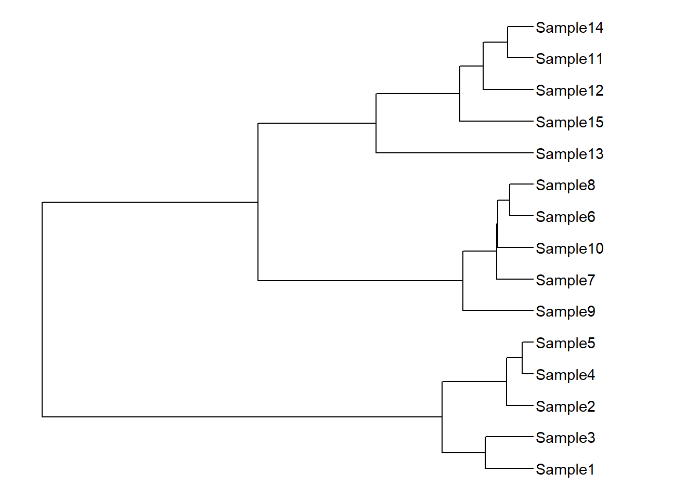
ggtree(dat02.hclust)+
geom_tiplab()+
xlim(NA,4) -> p
p+
geom_text(aes(label=node))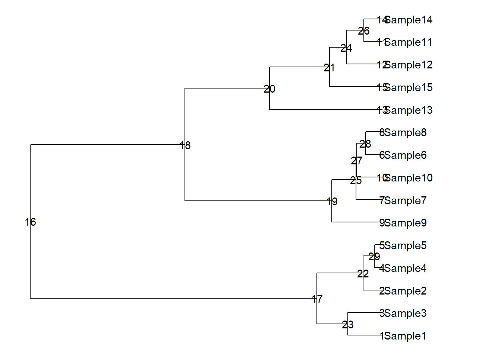
p +
geom_highlight(node = 17,fill="red")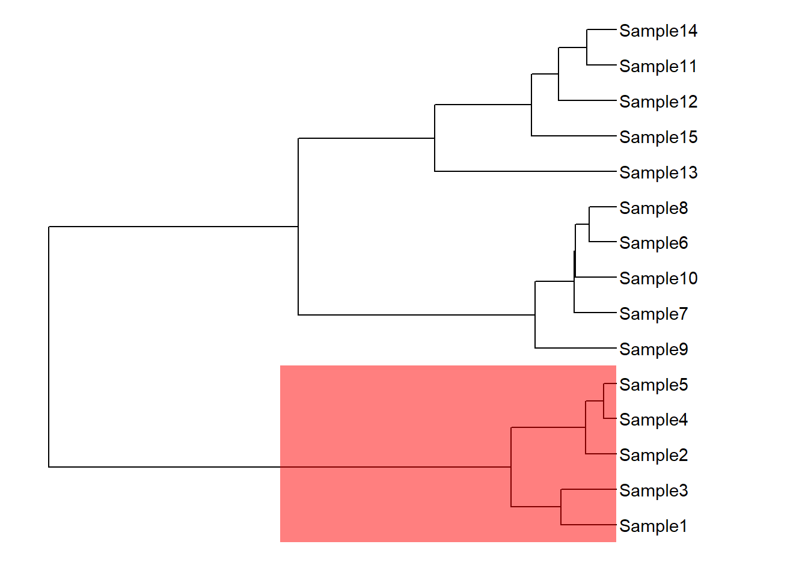
p +
geom_highlight(node = 17,fill="red",extend=4)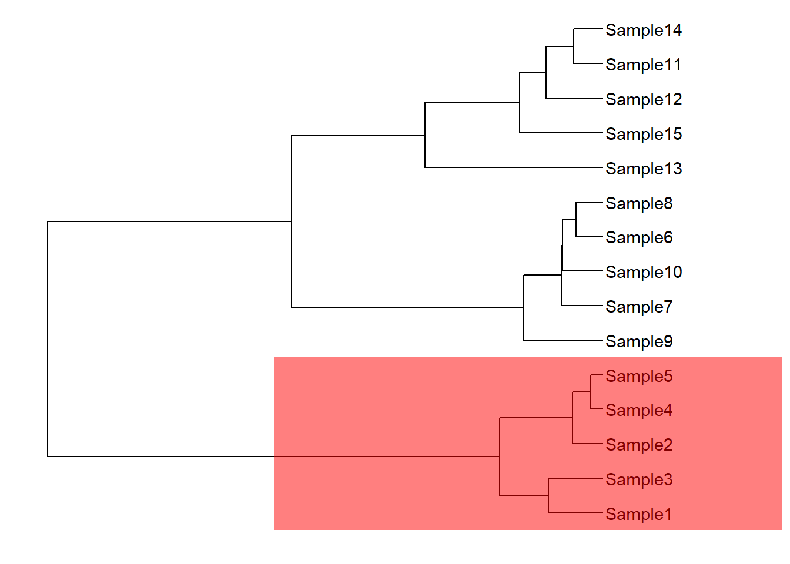
p +
geom_strip(taxa1 = "Sample5",taxa2 = "Sample1",barsize = 5,label = "ABCD",offset = 0.5,color = "green",extend = 1,angle = 90,offset.text = 0.1)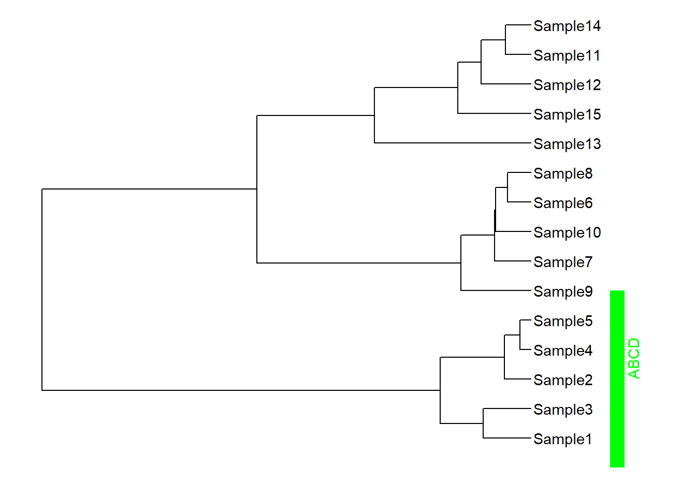
dat01 %>%
select(sample.info,Species) %>%
rename("label"="sample.info")-> dat03
ggtree(dat02.hclust) -> p
p %<+% dat03 -> p1
ggplot_build(p1)## $data
## $data[[1]]
## y x node parent PANEL group xend yend colour size linetype alpha
## 1 1.00000 2.869042 1 23 1 -1 3.177263 1.00000 black 0.5 1 NA
## 2 3.00000 3.004058 2 22 1 -1 3.177263 3.00000 black 0.5 1 NA
## 3 2.00000 2.869042 3 23 1 -1 3.177263 2.00000 black 0.5 1 NA
## 4 4.00000 3.106552 4 29 1 -1 3.177263 4.00000 black 0.5 1 NA
## 5 5.00000 3.106552 5 29 1 -1 3.177263 5.00000 black 0.5 1 NA
## 6 9.00000 3.027263 6 28 1 -1 3.177263 9.00000 black 0.5 1 NA
## 7 7.00000 2.942742 7 25 1 -1 3.177263 7.00000 black 0.5 1 NA
## 8 10.00000 3.027263 8 28 1 -1 3.177263 10.00000 black 0.5 1 NA
## 9 6.00000 2.721741 9 19 1 -1 3.177263 6.00000 black 0.5 1 NA
## 10 8.00000 2.948134 10 27 1 -1 3.177263 8.00000 black 0.5 1 NA
## 11 14.00000 3.011432 11 26 1 -1 3.177263 14.00000 black 0.5 1 NA
## 12 13.00000 2.853226 12 24 1 -1 3.177263 13.00000 black 0.5 1 NA
## 13 11.00000 2.159913 13 20 1 -1 3.177263 11.00000 black 0.5 1 NA
## 14 15.00000 3.011432 14 26 1 -1 3.177263 15.00000 black 0.5 1 NA
## 15 12.00000 2.702921 15 21 1 -1 3.177263 12.00000 black 0.5 1 NA
## 16 6.03125 0.000000 16 16 1 -1 0.000000 6.03125 black 0.5 1 NA
## 17 2.62500 0.000000 17 16 1 -1 2.589896 2.62500 black 0.5 1 NA
## 18 9.43750 0.000000 18 16 1 -1 1.396814 9.43750 black 0.5 1 NA
## 19 6.93750 1.396814 19 18 1 -1 2.721741 6.93750 black 0.5 1 NA
## 20 11.93750 1.396814 20 18 1 -1 2.159913 11.93750 black 0.5 1 NA
## 21 12.87500 2.159913 21 20 1 -1 2.702921 12.87500 black 0.5 1 NA
## 22 3.75000 2.589896 22 17 1 -1 3.004058 3.75000 black 0.5 1 NA
## 23 1.50000 2.589896 23 17 1 -1 2.869042 1.50000 black 0.5 1 NA
## 24 13.75000 2.702921 24 21 1 -1 2.853226 13.75000 black 0.5 1 NA
## 25 7.87500 2.721741 25 19 1 -1 2.942742 7.87500 black 0.5 1 NA
## 26 14.50000 2.853226 26 24 1 -1 3.011432 14.50000 black 0.5 1 NA
## 27 8.75000 2.942742 27 25 1 -1 2.948134 8.75000 black 0.5 1 NA
## 28 9.50000 2.948134 28 27 1 -1 3.027263 9.50000 black 0.5 1 NA
## 29 4.50000 3.004058 29 22 1 -1 3.106552 4.50000 black 0.5 1 NA
##
## $data[[2]]
## y x node parent PANEL group xend yend colour size linetype alpha
## 1 1.50000 2.869042 1 23 1 -1 2.869042 1.00000 black 0.5 1 NA
## 2 3.75000 3.004058 2 22 1 -1 3.004058 3.00000 black 0.5 1 NA
## 3 1.50000 2.869042 3 23 1 -1 2.869042 2.00000 black 0.5 1 NA
## 4 4.50000 3.106552 4 29 1 -1 3.106552 4.00000 black 0.5 1 NA
## 5 4.50000 3.106552 5 29 1 -1 3.106552 5.00000 black 0.5 1 NA
## 6 9.50000 3.027263 6 28 1 -1 3.027263 9.00000 black 0.5 1 NA
## 7 7.87500 2.942742 7 25 1 -1 2.942742 7.00000 black 0.5 1 NA
## 8 9.50000 3.027263 8 28 1 -1 3.027263 10.00000 black 0.5 1 NA
## 9 6.93750 2.721741 9 19 1 -1 2.721741 6.00000 black 0.5 1 NA
## 10 8.75000 2.948134 10 27 1 -1 2.948134 8.00000 black 0.5 1 NA
## 11 14.50000 3.011432 11 26 1 -1 3.011432 14.00000 black 0.5 1 NA
## 12 13.75000 2.853226 12 24 1 -1 2.853226 13.00000 black 0.5 1 NA
## 13 11.93750 2.159913 13 20 1 -1 2.159913 11.00000 black 0.5 1 NA
## 14 14.50000 3.011432 14 26 1 -1 3.011432 15.00000 black 0.5 1 NA
## 15 12.87500 2.702921 15 21 1 -1 2.702921 12.00000 black 0.5 1 NA
## 16 6.03125 0.000000 16 16 1 -1 0.000000 6.03125 black 0.5 1 NA
## 17 6.03125 0.000000 17 16 1 -1 0.000000 2.62500 black 0.5 1 NA
## 18 6.03125 0.000000 18 16 1 -1 0.000000 9.43750 black 0.5 1 NA
## 19 9.43750 1.396814 19 18 1 -1 1.396814 6.93750 black 0.5 1 NA
## 20 9.43750 1.396814 20 18 1 -1 1.396814 11.93750 black 0.5 1 NA
## 21 11.93750 2.159913 21 20 1 -1 2.159913 12.87500 black 0.5 1 NA
## 22 2.62500 2.589896 22 17 1 -1 2.589896 3.75000 black 0.5 1 NA
## 23 2.62500 2.589896 23 17 1 -1 2.589896 1.50000 black 0.5 1 NA
## 24 12.87500 2.702921 24 21 1 -1 2.702921 13.75000 black 0.5 1 NA
## 25 6.93750 2.721741 25 19 1 -1 2.721741 7.87500 black 0.5 1 NA
## 26 13.75000 2.853226 26 24 1 -1 2.853226 14.50000 black 0.5 1 NA
## 27 7.87500 2.942742 27 25 1 -1 2.942742 8.75000 black 0.5 1 NA
## 28 8.75000 2.948134 28 27 1 -1 2.948134 9.50000 black 0.5 1 NA
## 29 3.75000 3.004058 29 22 1 -1 3.004058 4.50000 black 0.5 1 NA
##
##
## $layout
## <ggproto object: Class Layout, gg>
## coord: <ggproto object: Class CoordCartesian, Coord, gg>
## aspect: function
## backtransform_range: function
## clip: on
## default: TRUE
## distance: function
## expand: TRUE
## is_free: function
## is_linear: function
## labels: function
## limits: list
## modify_scales: function
## range: function
## render_axis_h: function
## render_axis_v: function
## render_bg: function
## render_fg: function
## setup_data: function
## setup_layout: function
## setup_panel_guides: function
## setup_panel_params: function
## setup_params: function
## train_panel_guides: function
## transform: function
## super: <ggproto object: Class CoordCartesian, Coord, gg>
## coord_params: list
## facet: <ggproto object: Class FacetNull, Facet, gg>
## compute_layout: function
## draw_back: function
## draw_front: function
## draw_labels: function
## draw_panels: function
## finish_data: function
## init_scales: function
## map_data: function
## params: list
## setup_data: function
## setup_params: function
## shrink: TRUE
## train_scales: function
## vars: function
## super: <ggproto object: Class FacetNull, Facet, gg>
## facet_params: list
## finish_data: function
## get_scales: function
## layout: data.frame
## map_position: function
## panel_params: list
## panel_scales_x: list
## panel_scales_y: list
## render: function
## render_labels: function
## reset_scales: function
## setup: function
## setup_panel_guides: function
## setup_panel_params: function
## train_position: function
## xlabel: function
## ylabel: function
## super: <ggproto object: Class Layout, gg>
##
## $plot
##
## attr(,"class")
## [1] "ggplot_built"p1+
geom_tiplab(aes(color=Species))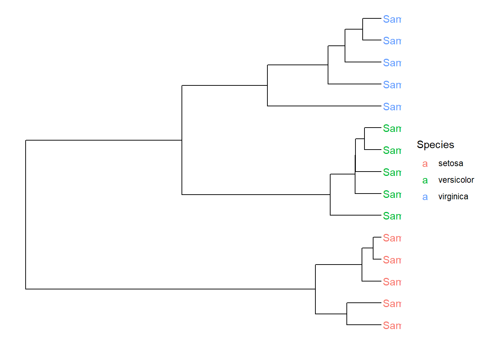
p1 +
geom_tippoint(aes(shape=Species,color=Species),size=5)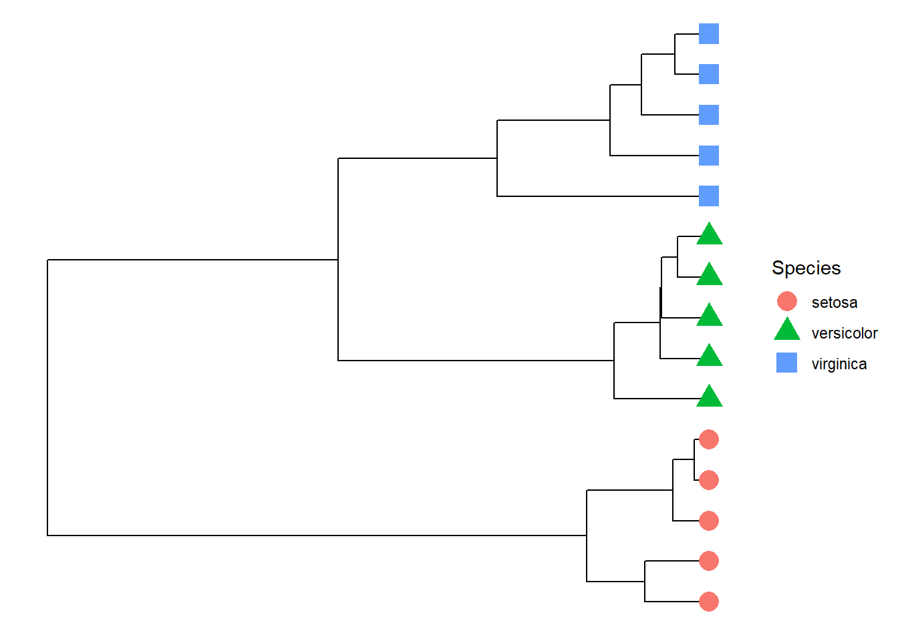
ggtree(dat02.hclust,layout = "circular") -> p.circular
p.circular %<+% dat03 -> p1.circular
p1.circular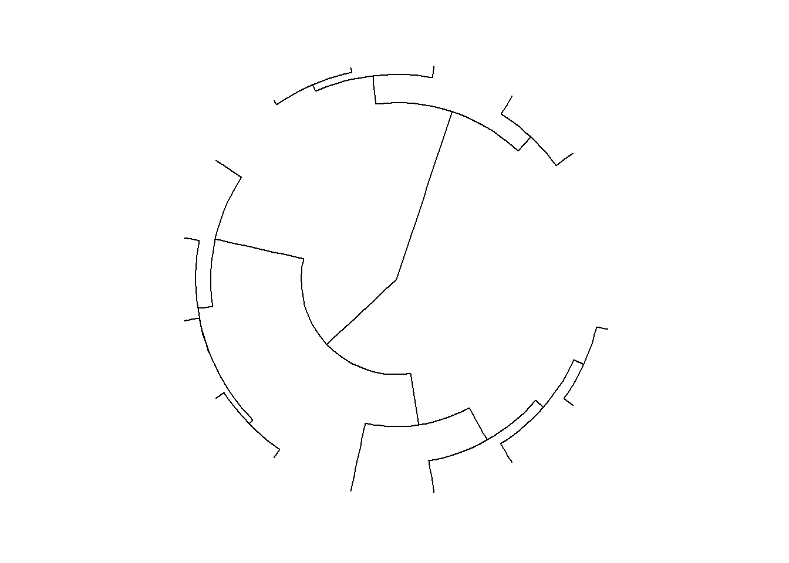
p1.circular +
geom_tippoint(aes(color=Species,shape=Species),size=10)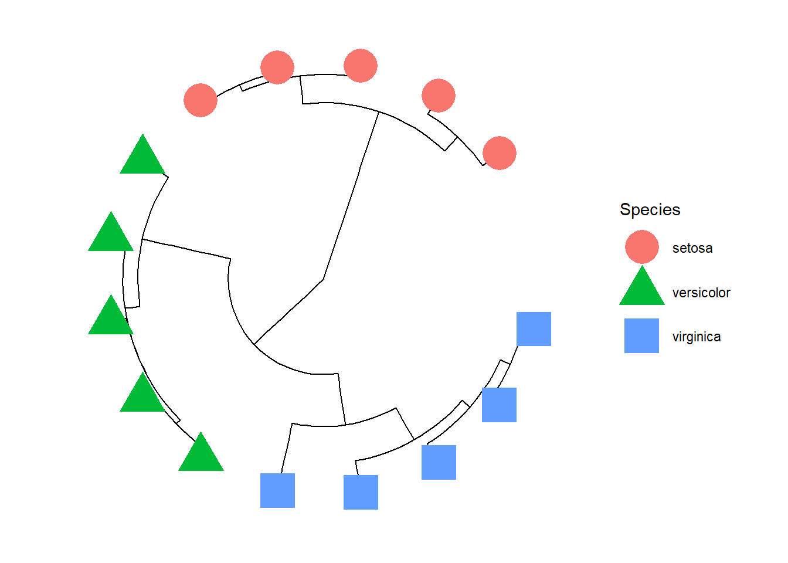
10.1 进化树
进化树最常用到的格式是newick,格式如下
library(treeio)
tree<-read.newick("example_data/10-treediagram/example_tree.nwk",
node.label = "support")
ggtree(tree)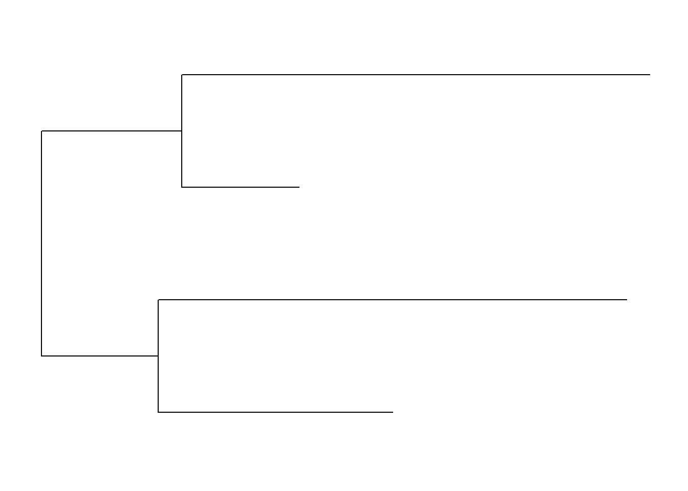
ggtree(tree,layout = "circular")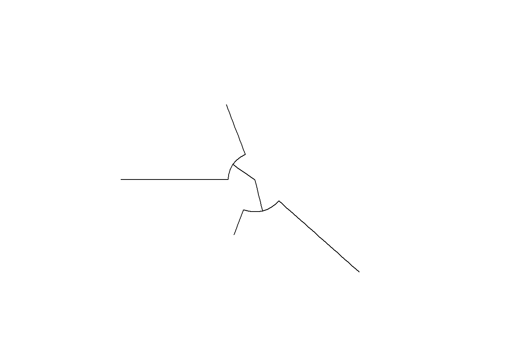
ggtree(tree)+
geom_tiplab()+
geom_nodelab(aes(label=support))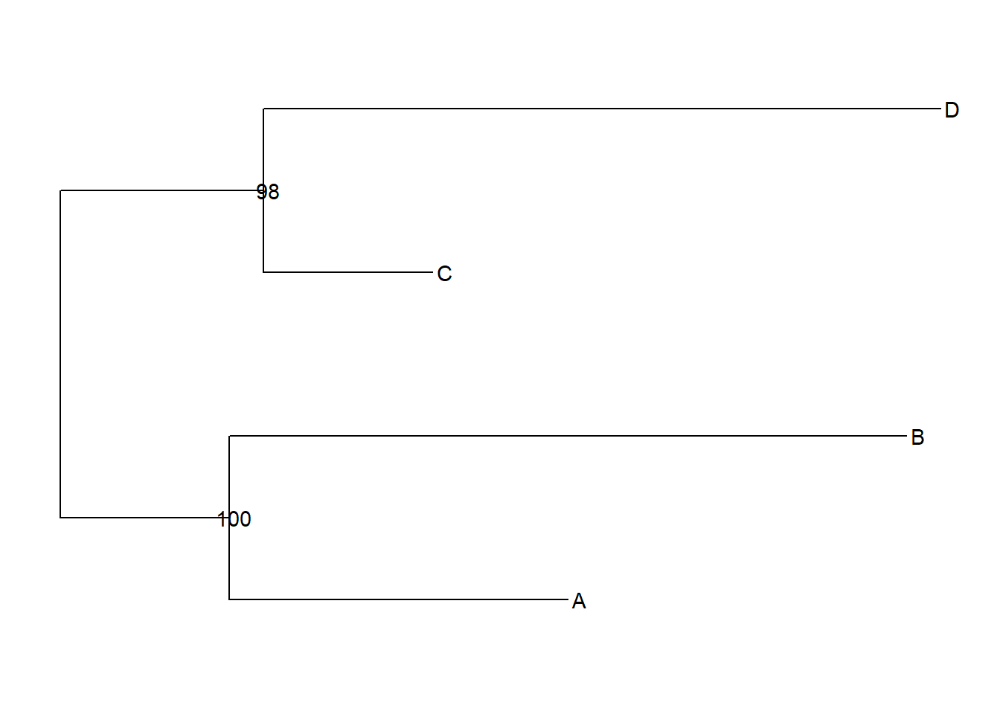
ggtree(tree)+
geom_tiplab()+
geom_nodepoint(aes(size=support))## Warning: Removed 1 rows containing missing values (geom_point_g_gtree).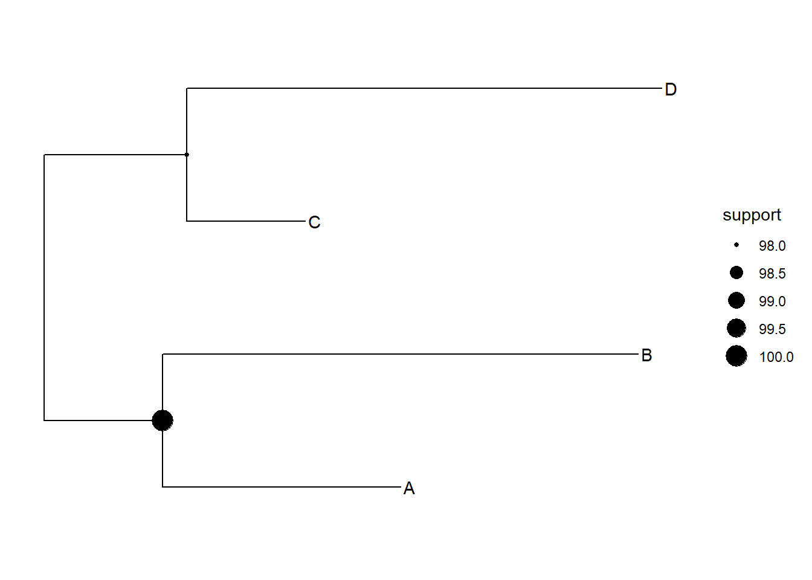
ggtree(tree)+
geom_tiplab()+
geom_nodepoint(aes(size=support))+
scale_size_continuous(range = c(5,10))## Warning: Removed 1 rows containing missing values (geom_point_g_gtree).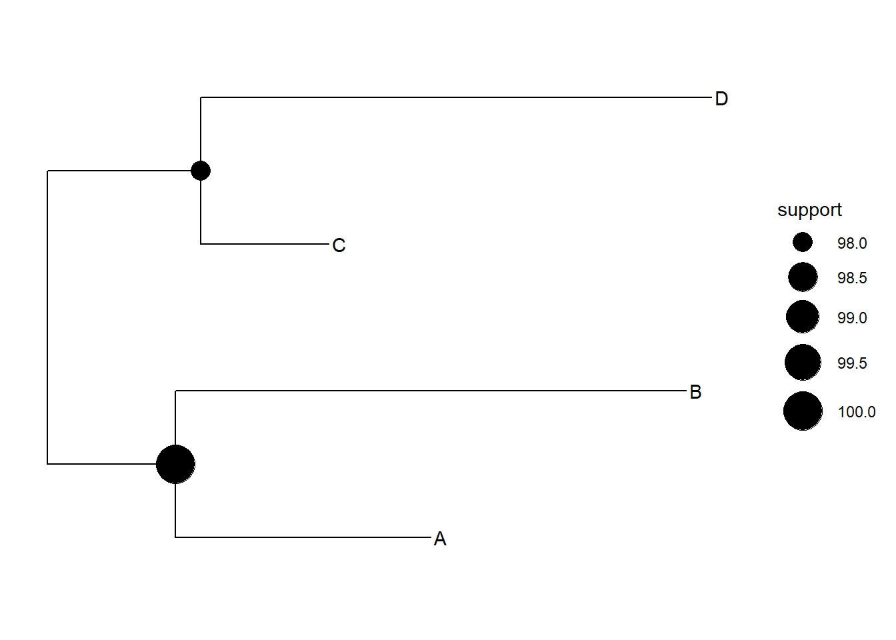
#ggtree(tree,layout = "daylight")10.2 ggtreeExtra添加额外注释信息
library(tidyverse)
library(readxl)
dat01<-read_excel("example_data/10-treediagram/tree_extra_info.xlsx")
tree<-read.newick("example_data/10-treediagram/example_tree.nwk",
node.label = "support")
ggtree(tree) -> p1
#p %<+% dat01 -> p1
p1library(ggtreeExtra)
p1+
geom_tiplab()+
geom_fruit(data = dat01,
geom = geom_point,
mapping = aes(y=ID,size=barplot)
)+
geom_fruit(data = dat01,
geom = geom_bar,
mapping = aes(y=ID,x=barplot),
stat="identity",
orientation = "y",
axis.params = list(axis="x"),
grid.params = list())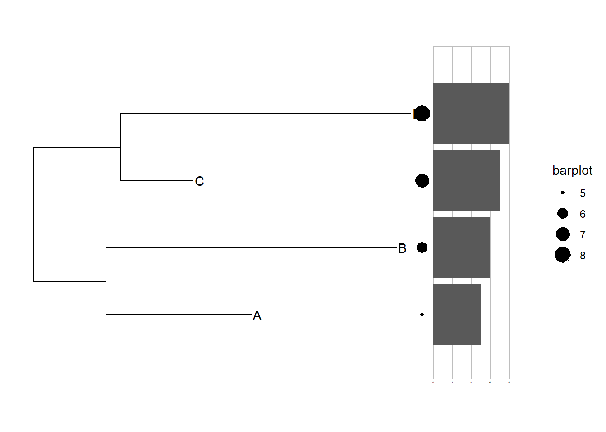
dat02<-read_excel("example_data/10-treediagram/tree_extra_info.xlsx",
sheet = "Sheet2")
p1+
geom_tiplab()+
geom_fruit(data = dat01,
geom = geom_point,
mapping = aes(y=ID,size=barplot)
)+
geom_fruit(data = dat01,
geom = geom_bar,
mapping = aes(y=ID,x=barplot),
stat="identity",
orientation = "y",
axis.params = list(axis="x"),
grid.params = list())+
geom_fruit(data=dat02,
geom = geom_tile,
mapping = aes(y=ID,x=x,fill=value),
pwidth = 0.1)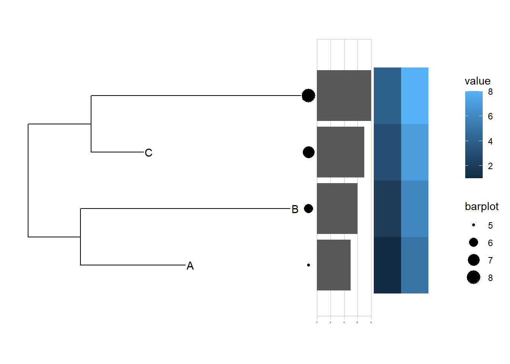